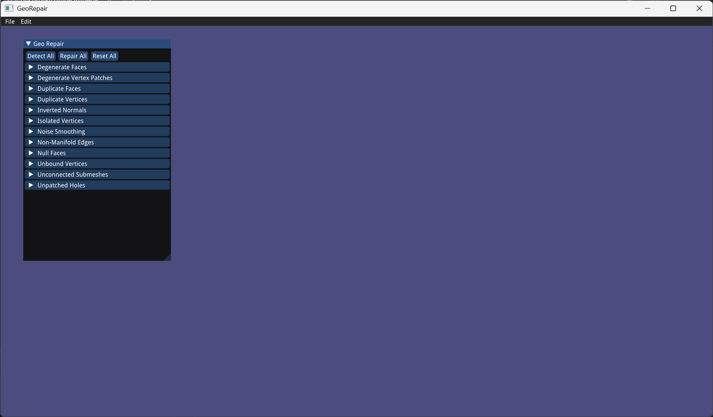
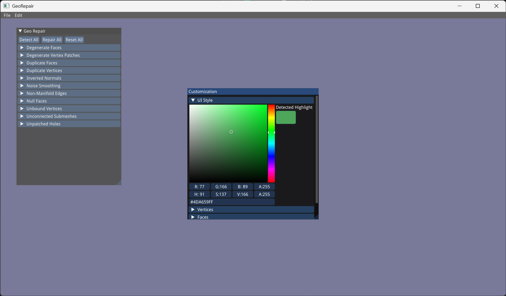
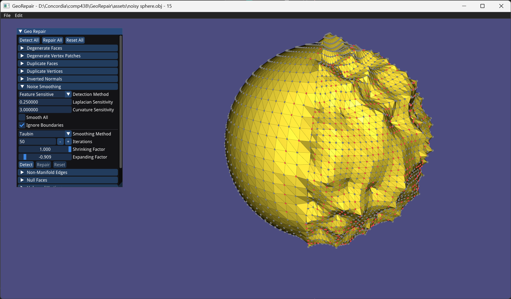
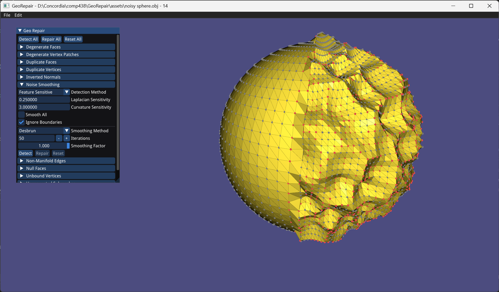
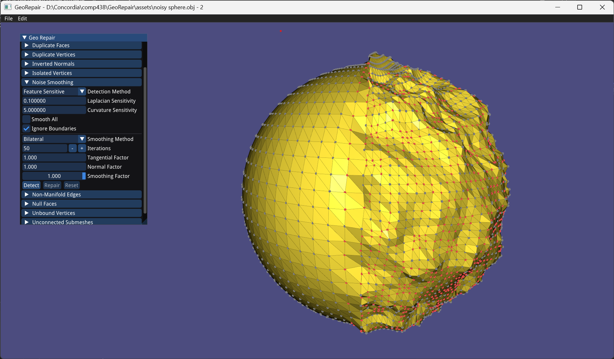

Introduction
GeoRepair is a program built with libIGL, Eigen, and ImGui, that detects and repairs mesh defects. It supports loading and saving most mesh file types, detecting and repairing many different mesh defects (a full list is found here), undoing and redoing changes, and visualisation of these defects (successful detection will highlight responsible vertices, faces, and edges). As is detailed further in the features section, each mesh defect may have multiple configurable parameters as well. Each algorithm is either an implementation I had to derive myself, or the implementation of an existing paper or resource:
The actual design of the application is split between a front-end menu (using ImGui) and a back-end OOP hierarchy (each defect extends a common Defect base class), making GeoRepair
modular and
extensible.
Challenges
The most difficult features to implement were:
- The various noise smoothing algorithms: they were the most mathematically technical.
- The algorithms involving duplicate vertices: they required the manual implementation of an EquivalenceClasses data structure.
- The ear clipping algorithm: it required a completely separate utility file of a few hundred lines that included the implementation of a complex data structure called EarClippingData. This data structure consists of several interconnected circular and linear linked lists, and thus was very fragile to implement and test. However, the benefit of it was in reducing the time complexity of the overall algorithm from O(n3) to O(n2).
My original vision was for GeoRepair to only edit vertex and face data in a mesh file, leaving all other data (like texture coordinates, normals, etc.) untouched. However, this would require writing custom parsing functions for each mesh file type (.obj, .off, .stl, etc.) in order to filter only the vertex and face data. Instead, igl::read_triangle_mesh and igl::write_triangle_mesh were used generically for any file type, resulting in a loss of that extra data and automatic triangulation of all faces. Fortunately, when re-importing the repaired mesh back into a program like Blender, the normals will be recalculated. Additionally, GeoRepair was initially intended to be used before setting up texture coordinates and materials in any case.
Another difficulty came from the implementation of a potential selection tool, which I considered adding late into development of the project. LibIGL provides a built-in widget for vertex selection, but not face and edge selection, which would have been used by many of the mesh defects. Face selection in particular would have been challenging to implement, since there would need to be some kind of threshold mechanism for determining whether certain faces should be considered selected in a user box/lasso select. Blender, for instance, displays a dot in the center of each face, and it is that dot that must be selected in order to select the face. In the end, it would have been a large feature to implement, and I was already near the end of the project timeline, so it's also beyond the project's scope.
Analysis of results
As will be seen in the features section, many meshes, simple and complex, were tested for proper defect detection and repairing, and performance of the implemented algorithms. In particular, each defect has at least one mesh that has at least one instance of that defect, and some meshes contain multiple types of defects. Performance-wise, GeoRepair can process defects in meshes of at least 20,000 vertices in real time. Additionally, aside from the ear-clipping algorithm, which ended up being quadratic, the time complexity of all algorithms that I implemented (so not necessarily LibIGL's under-the-hood operations like igl::boundary_loop) is linear. In all, all of the implemented algorithms are successful in efficiently and properly detecting and repairing the mesh defects supported by GeoRepair.
Features
Main views


The startup screen of GeoRepair (left) and a mesh loaded into the program (right).



The file menu (top-left) allows the user to load/save a mesh, view the info popup, and open the customization settings (bottom). The customization settings lets the user customize all colors used by in the mesh, as well as vertex sizes and edge lengths. The edit menu (top-right) allows the user to undo (or Ctrl+Z), redo (or Ctrl+Shft+z), clear visualisation (clear all markings made by the detection algorithms), or restore the visualisation.
Degenerate faces
The original mesh (top-left), detected vertices responsible for degenerate faces (top-right), and the repaired mesh (bottom). A degenerate face has at least 2 vertices whose distance is within the threshold value. If the "ignore normals" option is unchecked, then two faces that are made up of the same vertices but have different winding orders are considered separate faces and won't be considered as duplicate faces. Otherwise, all duplicate faces minus 1 are considered degenerate faces - there will be one face remaining but all other duplicates with that face are removed.
Degenerate vertex patches
The original mesh (top-left), detected vertices responsible for degenerate vertex patches (top-right), and the repaired mesh (bottom). A degenerate vertex patch is a set of vertices all within the same connected submesh, where any one vertex is within the threshold value of some other vertex in the set. In other words, they are duplicate vertices that lie in the same connected submesh.
Duplicate faces
The original mesh (top-left), detected duplicate faces (top-right), and the repaired mesh (bottom-left). Though the repaired mesh looks the same as the original mesh, detecting for duplicate faces on the repaired mesh yields (bottom-right), indicating no defects were found. If the "ignore normals" option is unchecked, then two faces with the same vertices but with different winding orders are not considered duplicates.
Duplicate vertices
The original mesh (top-left), detected duplicate vertices within the tolerance threshold (top-right), and the repaired mesh (bottom).
Inverted normals
The original mesh (top-left), detected inverted normals (bottom-left), and the repaired mesh (bottom-right). Note that the visualisation is maintained until cleared, but the faces are all clearly correctly oriented. The "flip all" button flips all normals in the mesh (top-right).
Isolated vertices
The original mesh (top-left), detected isolated vertices (top-right), and the repaired mesh (bottom).
Noise smoothing
The original mesh (top-left), detected noisy vertices (top-right), and the repaired mesh (bottom). There are several different algorithms for detecting and repairing noise, each of which is outlined below. The "smooth all" option considers all vertices as being noisy, while the "ignore boundaries" option forces vertices on a boundary to not be considered noisy, since they might falsely be considered so. Notice that in the above images, "ignore boundaries" is unchecked, so the boundary maintains its jagged edges.
The three implemented detection algorithms are Laplacian residual (top-left), mean curvature (top-right), and feature sensitive (bottom). The Laplacian residual (normalized Laplacian vector) and mean curvature are both implemented by comparing each vertex's values to the mean and standard deviation of all vertices in the mesh. The upper outliers are considered noisy, according to the "sensitivity" options. The feature sensitive combines the Laplacian residual (positively) and the mean curvature (negatively) in order to only detect true noise, and not sharp feature vertices. Specifically, a vertex is considered noisy its Laplacian residual is an upper outlier but its mean curvature is not. The following table illustrates this relationship:
|
High Laplacian residual |
Low Laplacian residual |
| High mean curvature |
Likely a sharp feature |
Likely a feature |
| Low mean curvature |
Likely true noise |
Smooth - likely no noise |
The four implemented repairing algorithms are illustrated below. Additionally, the "iterations" parameter can be set to increase how many times the smoothing algorithm is reapplied.



The smoothing methods of: Laplacian (top-left), Taubin (top-right), Desbrun (bottom-left), and bilateral (bottom-right). Based on some crude testing comparisons, the bilateral smoothing algorithm seems to be the most efficient and most effective algorithm of these four. Each is described as follows:
- Laplacian: noisy vertices simply subtract from themselves their laplacian vector times the smoothing factor. It may cause shrinkage.
- Taubin: similar to Laplacian, but an additional expanding operation is done after every Laplacian smoothing operation to prevent any shrinkage.
- Desbrun: similar to Laplacian, but prevents shrinkage by preserving volume.
- Bilateral: a different kind of algorithm that approximates a noisy vertex's displacement to the future noise-free mesh and subtracts it from itself. The algorithm
is more involved than the others, but can be explained in much more detailed here. Another benefit is that it also does not cause any irregularity,
shrinkage, or drifting like the other algorithms might.
Non-manifold edges
The original mesh (left), and the detected non-manifold edges (right). There's no one logical way of dealing with non-manifold edges, so no repair option is provided.
Null faces
The original mesh (left), and the detected vertices/edges of null faces (right). The repaired mesh looks the exact same as the original mesh. A null face in GeoRepair is defined as a face that has at least 2 duplicate vertices - not in the vertex position sense, but in the vertex index sense. In the above image, a single highlighted vertex is a face with 3 duplicate vertices (i.e. just the one vertex), while a highlighted edge is a face with 2 duplicate vertices and 1 other vertex.
Unbound vertices
The original mesh (left), and the repaired mesh (right). The unbound vertices are normally highlighted, but the vertices in the above example are too far out. The 3D bounding box that clamps vertices can be edited in the menu.
Unconnected submeshes
The original mesh (left), and the detected submeshes that are connected, but separate from each other (right). There's no one logical way of connecting separated submeshes, so no repair option is provided.
Unpatched holes
The original mesh (left), and the detected hole boundaries (right). The "flatten" option applies to boundaries that are not coplanar, for which the patching algorithm attempts to find the flattest triangulation. In total, there are 5 patching methods implemented.
The
fan method (left), and the
fan method with a different offset (right). The offset option changes the initial vertex in the triangulation method, and provides different results as can be seen above. The
fan method fans out triangles that consist of adjacent vertices and the initial vertex.
The
strip method (left) and the
clip method (right). The
strip method alternates adjacent vertices on either side of the boundary. The
clip method clips vertices along the boundary iteratively, until only a single central triangle remains.
The
pie method (left) and the
ear clipping method (right). The
pie method adds a new vertex at the mean position of the boundary, and fans out using the new vertex as the shared vertex. The
ear clipping method is similar to the
clip method, but only clips ears (convex vertices [angle < 180] whose near triangle - the triangle formed by it and its two neighbouring vertices - does not contain other reflex vertices [angle >= 180]).
The first four triangulation methods on an octagon and a septagon (left), and an
ear clipping triangulation of a concave polygon (right). Only the
ear clipping method works well for non-convex polygons. The
ear clipping method also provides an "ear cycle" parameter:
An
ear clipping with cycle=0 (left) and cycle=-1 (right). The cycle parameter determines how ears are traversed through the algorithm, i.e. once an ear is clipped, the offset of the next ear that gets clipped.